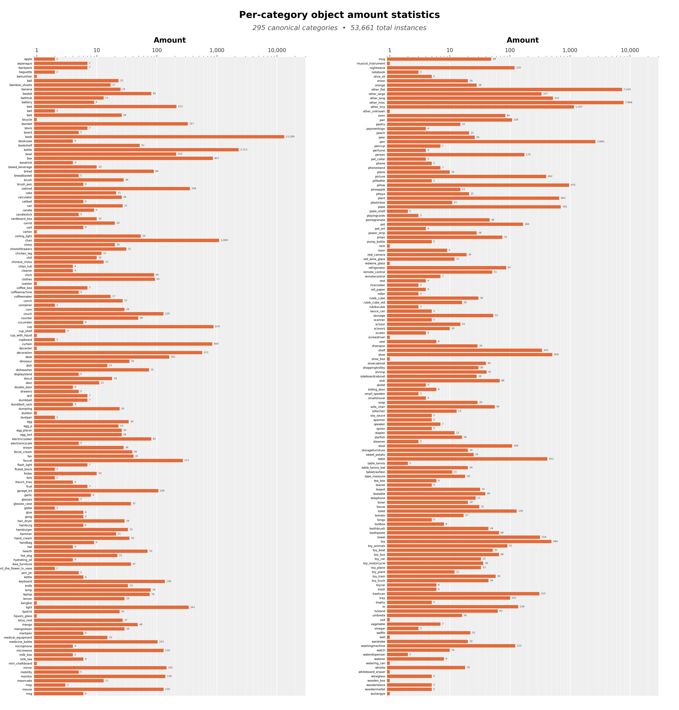
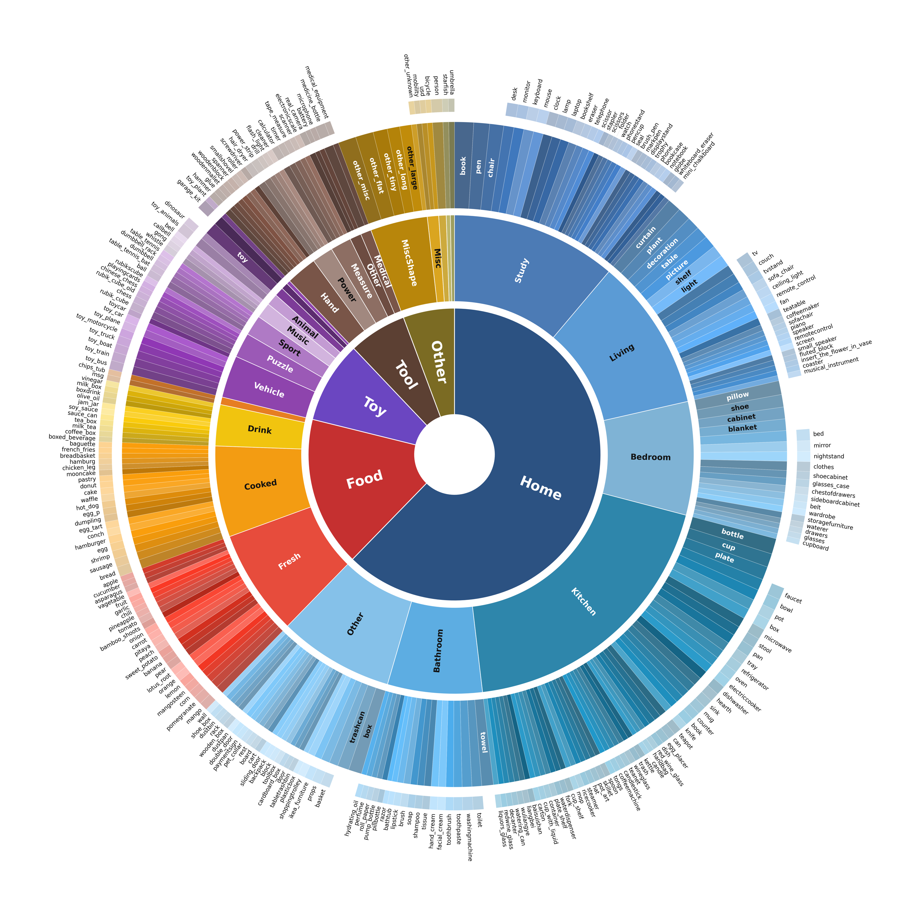
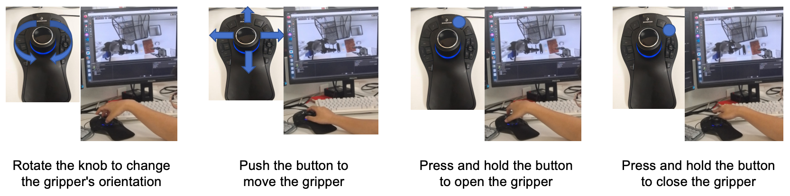
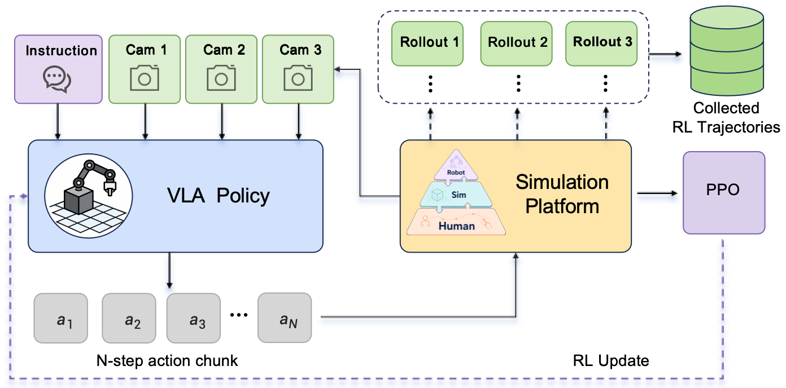
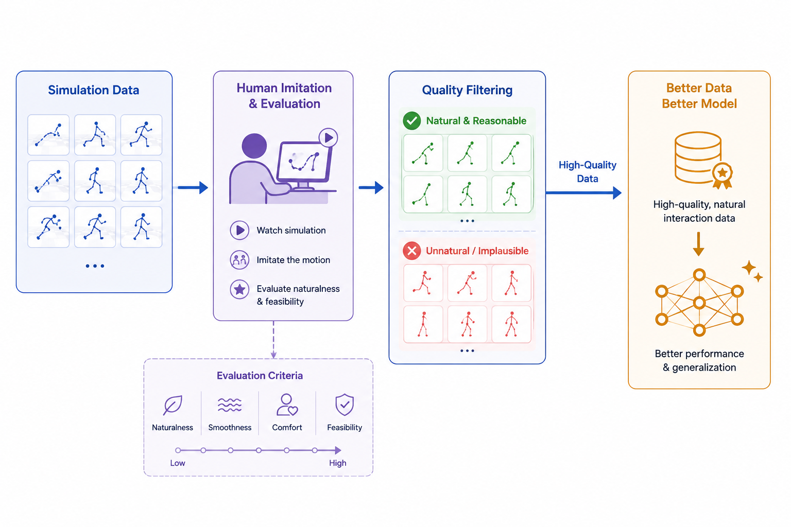
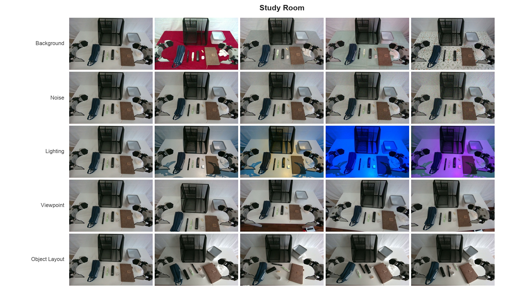

JoyAI-Sim places simulation at the center of the embodied data pyramid. The system aligns scarce but
deployment-faithful robot data with abundant but embodiment-agnostic human data, using simulation as both a
scalable evaluation layer and a physical consistency filter for data generation.
53,661simulation-ready assets
295fine-grained categories
2bidirectional pathways
Technology
Simulation is the hub between deployment signals and scalable data.
JoyAI-Sim is broader than a traditional real-to-sim-to-real loop. It explicitly introduces the Human
modality as a source of demonstrations, observations, and embodied feedback, while keeping real robot tasks
as the deployment anchor. The result is a three-level data system for evaluation, synthesis, filtering, and
augmentation.
Robot → Simulation → Human
Evaluation and trajectory refinement
Real-robot tidy-up tasks define scene layout, object-target mappings, reset states, language semantics,
and success criteria. Digital twins reproduce these conditions for high-throughput screening, while human
embodied feedback identifies motion strategies that are executable but unnatural.
Human → Simulation → Robot
Robot-centered data generation
Ego-centric human demonstrations are lifted into simulation, checked under robot kinematic and contact
constraints, and converted into robot trajectories, state-action records, task labels, and robot-view
observations that can be expanded by rendering and reality augmentation.
JoyAI-Sim organizes digital twin replication, naturalness refinement, cross-embodiment retargeting, and physical consistency checking.
Robot → Simulation → Human
Real robot tasks become reproducible digital-twin evaluation.
Real-robot evaluation is the most faithful deployment signal, but it is slow, costly, hard to parallelize,
and difficult to reproduce exactly. JoyAI-Sim therefore reconstructs AgiBot G1 household tidy-up tasks in
Isaac Sim 5.1, aligning robot embodiment, objects, cameras, lighting, control pathways, and task predicates
so that simulation success rates become diagnostic rather than merely visual.
Robot scenes are reconstructed as digital twins, generalized in simulation, and inspected through human motion naturalness feedback.
Home assets33,490
62.4% of the simulation-ready library covers household scenes.
Study + Kitchen71.8%
The dominant Home sub-scenes match long-horizon tabletop organization tasks.

SimReady asset distribution across fine-grained object categories.

Home-scene distribution across study, kitchen, living room, bedroom, bathroom, and other rooms.
Interaction alignment
The digital twin shares robot kinematics, ready pose, fisheye camera calibration, actuator behavior, DDS
command schema, and Parquet record/replay protocol with the physical G1 platform. This isolates
performance gaps to scene, sensing, and dynamics rather than evaluation infrastructure.
Simulation Data Synthesis
Four complementary generators cover bootstrapping, augmentation, and exploration.
JoyAI-Sim combines virtual teleoperation, FSM-based synthesis, IKFlow augmentation, and RL-based trajectory
collection. These methods trade off demonstration requirements, generation speed, and success rate, forming
a data-generation stack that ranges from human-in-the-loop seeds to autonomous contrastive experience
mining.
JoysimTeleoperate6DOF input devices collect simulation demonstrations with a closed-loop teleoperation process.
FSMZero-demonstration rule-driven synthesis; about 30% success and 300 seconds per sample.
IKFlowFew-shot joint-space augmentation; about 70% success and 2.5 seconds per sample.

Virtual teleoperation for simulation demonstration collection.

RL policies collect successful and failed trajectories as contrastive experience.

Simulation trajectories are mapped into human-hand space so operators can judge global strategy naturalness.
Human → Simulation → Robot
Human video becomes robot-consumable data through physical filtering.
Ego-centric human videos provide a scalable source of everyday manipulation behavior, but robots cannot
directly execute human hand motion. JoyAI-Sim extracts task-space motion cues, reconstructs or authors a
simulation context, retargets the demonstration under robot constraints, and exports feasible robot-centered
rollouts with synchronized observations, states, actions, contacts, and task labels.
01
Motion prior
Estimate hand pose and extract wrist motion, approach direction, grasp phase, and interaction regions.
02
Simulation context
Instantiate objects, containers, surfaces, cameras, and robot embodiment as editable simulation setup.
Render domain-randomized and realism-enhanced robot videos while preserving privileged annotations.
Target production plan: 10,000 hours of synthetic videos and 150k realism-enhanced videos.
Experiments
JoyAI-Sim improves evaluation efficiency and strengthens JoyAI-RA training.
The latest technical report validates JoyAI-Sim with JoyAI-RA on simulation and real-robot tabletop
organization tasks. The digital-twin evaluation is designed to correlate with real performance, while
simulation data synthesis and human/simulation co-pretraining provide measurable gains across benchmarks.
RoboTwin 2.0 Easy90.48%
JoyAI-RA average success rate on the full RoboTwin 2.0 benchmark.
RoboTwin 2.0 Hard89.28%
Strong performance under harder simulation settings.
RoboCasa GR163.2%
Average success rate on RoboCasa GR1 Tabletop tasks.
Human data ablation89.30%
RoboTwin Easy success with JDAgiBot, EgoDex, and EgoLive.
Training configuration
Success rate
Role of JoyAI-Sim
Baseline VLA post-training
81.28%
Reference policy without co-pretraining gains.
VLM + VLA co-pretraining with human data
90.48%
Human data contributes across both training stages.
VLM + VLA co-pretraining without simulation data
89.10%
Measures performance before Stage-2 simulation expansion.
VLM + VLA co-pretraining with simulation data
90.24%
Simulation data provides additional Stage-2 gains.
Videos
Presentation media remains available as visual evidence.
In addition to the latest paper figures, the page keeps synchronized presentation media that shows robot,
simulation, and human views side by side. These clips are useful for quickly inspecting cross-domain
alignment behavior.
Toolchain overview
Synchronized project visual exported from the presentation deck.
Robot, simulation, and human views
Three aligned views for cross-domain comparison.

Real-robot generalization
AgiBot G1 head-camera observations under controlled visual changes.
JoyBuilder Cloud Service
A managed workflow for simulation data generation and visual enhancement.
JoyAI-Sim is packaged through JoyBuilder 2.0 service entries on JD Cloud. The embodied simulation service
prepares scenes, robot embodiments, cameras, and robot-centered simulation videos, while the
Cosmos-Transfer notebook service performs reality augmentation to improve texture, lighting, and visual
realism.